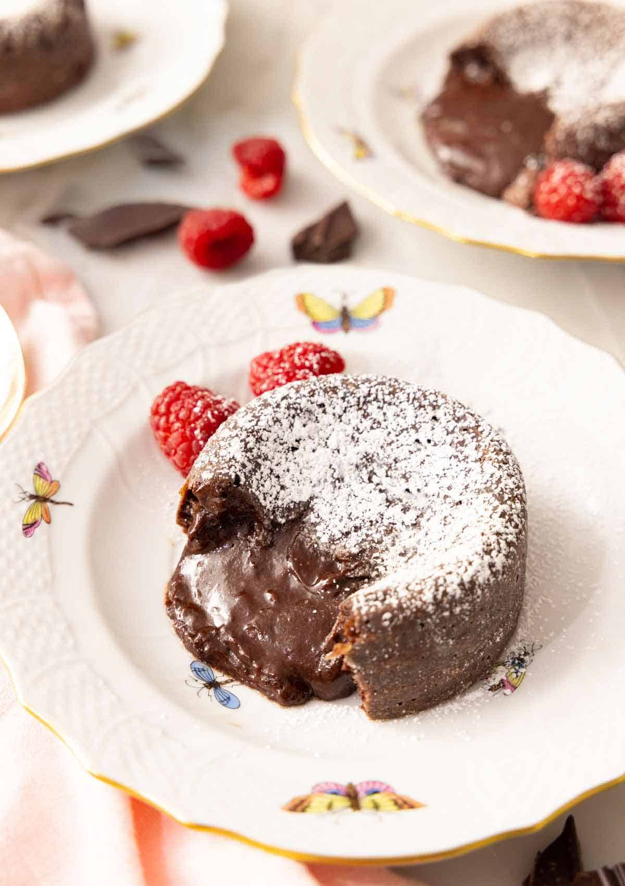

Lava Cake

Description
You won't believe how easy it is to make molten chocolate lava
cakes at home. They are the perfect individual desserts that are
purposefully slightly undercooked, resulting in a gooey and melty
chocolate center that oozes out when you cut into it.
Perfect for both special occasions such as Valentine's Day or
Mother's Day or a regular weekend, these molten chocolate cakes
are so easy to whip together. You only need some pantry staples,
making them perfect as a last-minute dessert.
Ingredients
- 1/2 Cup unsalted butter
- 6 Oz bittersweet chocolate
- 2 large eggs
- 2 large egg yolks
- 1/4 Cup granulated sugar
- 1/8 Tsp salt
- 2 Tbsp flour
Steps
-
Preheat the oven to 450F. Butter and lightly flour 6
(4- to 5-ounce) ramekins and place them on a baking sheet.
-
Combine the butter and chocolate in a double boiler and melt
over low heat, stirring until smooth. Or, place the butter and
chocolate in a microwave-safe bowl and microwave on high,
stirring every 30-seconds until melted. Whisk together until
smooth.
-
In a large mixing bowl, combine the eggs, egg yolks, sugar, and
salt. Beat on medium speed until thick and pale yellow. Fold
the chocolate mixture and flour into the egg mixture until well
combined. Divide the batter among the prepared ramekins.
-
Bake for 6 to 8 minutes or until the sides of the cakes are
firm set but the center is jiggly. Let the cakes cool in the
ramekins for 1 minute.
-
Place a small dessert plate over the top of each ramekin and
carefully turn it over, inverting the cake onto the plate. Let
stand for about 10 seconds, then remove the ramekin to unmold
the cakes. Sift powdered sugar on top and garnish with berries,
if desired. Serve immediately.